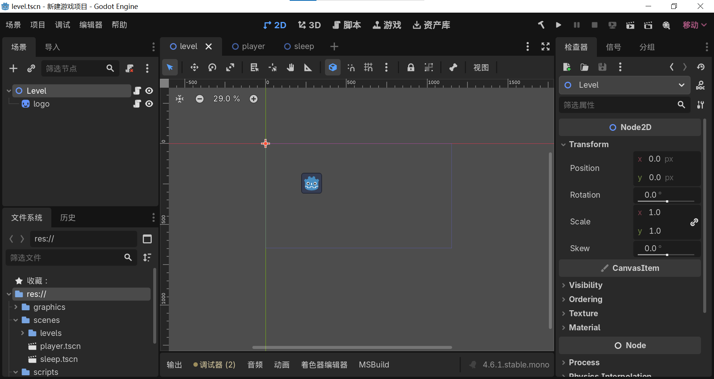

Godot学习笔记
记录Godot游戏引擎的学习
本文章长期更新（最后更新于2026.3.27）
前言
古人有云，温故而知新，学习做笔记
考虑到应该学习一点其他东西了，所以打算学习Godot引擎做出全宇宙爆款的胎死腹中音乐游戏，这个是古话了
其实在选择学什么之前，也在考虑是选择Godot还是市场占有率更高的Unity. 但是Godot有以下吸引我的点
- 看着性能占用不高
Unity给我的感觉是很重型。假设我要做一个项目，我要启动Unity Hub，再启动Unity，然后启动Visual Studio. 要打开的东西很多，无法保证我的便携电脑能带的动。而Godot是一个绿色软件，看着很轻量化。
- GDScript看着更容易上手
因为目前所规划的想做的游戏基本都是2D游戏，虽然说还有像Cocos2D这样的专业选手，但是我的C++水平基本等于没有，Java目前是起步阶段，C#的学习看着也比较曲折。
Godot的原生编程语言GDScript以近似Python一样的简便而闻名。实际体验也确实容易理解。没准GDScript学会了还能点下Python技能树。
- Unity经常做妖
我懒得对这一条进行解释。
其他的暂时没想出来，我还没有达到从技术方面对他们进行剖析的水平。如果未来水平足够或者需求提高，再考虑学习其他引擎
本文基于Clear Code的《Godot4终极入门教程》，在这里附上B站链接。
关键概念
节点
节点 (Node) 是Godot的一个重要的概念。场景是一个节点，玩家是一个节点，很多东西都是节点。整个Godot就是一个节点大世界。
在Godot中基本要做的就是制作各种节点然后将他们联系在一块，个人感觉可以将它们视作多个对象。

图为Godot的主界面，按下Ctrl + A来增加新的节点。
节点使用帕斯卡命名法，即每个单词首字母大写。而其他内容使用蛇形命名，即所有字母小写，用下划线链接。Godot会自动帮你做好这些内容。
节点具有图层优先级，类似于Ps，越往下面图层就会越优先。
父节点与子节点
节点具有包含关系。可以将一个节点B归属到另一个节点A. 此时A为B的父节点，反之为子节点。
父节点中对属性的改变都会对子节点造成影响，而反之不然。
可以右键选择父节点增加子节点。如果要把已有的节点作为子节点，按下Ctrl + Shift + A或者点击“实例化子节点”选项，将会列出所有可以作为子节点的其他节点
语言
Godot的原生语言为GDScript，虽然宣传说的是类似Python，但准确来讲，他就是Python. 除了部分关键词有区别外，其他的基本如出一辙。
游戏中的所有属性都可以在属性面板中找到，将鼠标选在其上方将会自动显示对应的变量名称。
由于Markdown没有原生GDScript支持，所以代码块将会使用Python.
语言特点
数据类型：常见的数据类型都有覆盖，数组覆盖了元组和列表。
两种变量：普通变量和常量
普通变量格式：
1
2var name = 200 #直接赋值的一般格式
var names: int = 114 #指定数据类型的格式常量格式：
1
const value = 200 #直接赋值的一般格式
函数：用来实现功能
Python应该用的是
define作为函数关键词，但GDScript中使用func作为关键词。格式如下所示1
2func name_here(vari a: int) -> bool #括号里透数据类型，箭头指定返回类型
return true #首行缩进说明其仍然属于函数中流：包括if-else，for-while循环，continue-break，数学运算，数值比较等
类：和我的想法差不多，有功能的节点可视为一个类
内置函数
游戏默认有两个内置函数，且都以下划线开头。两个函数如下所示
1 | func _ready() -> void: |
_ready，我打算叫他预备函数，在节点准备好后就会开始运行
_process，我打算叫运行函数，游戏每帧都会执行
在父节点中可能会更改子节点的属性。有两种方式可以调用
1 | get_node("node path") |
输入后，自动补全会列出所有可用的子节点。